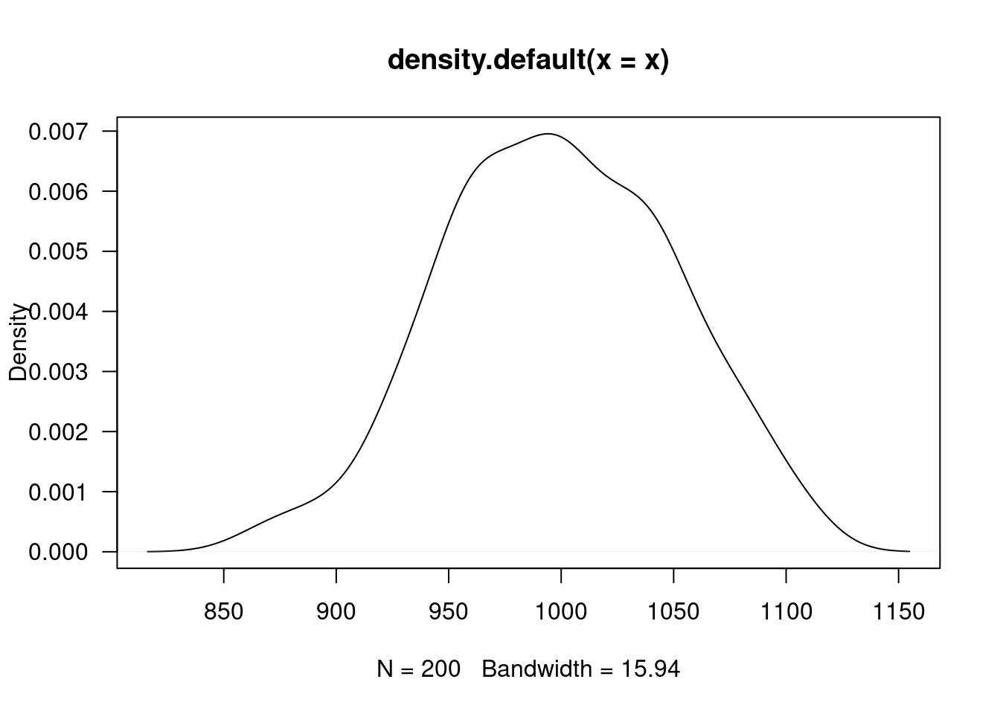

Existen varias pruebas de hipotesis para verificar si una variable tiene un comportamiento aproximadamente normal.En todos los casos las hip?teisis planteadas son:
\(Ho\): \(X\) tiene distribución Normal \(Ha\): \(X\) no tiene distribución Normal
# se genera una variable aleatoria normal
x=rnorm(200,1000,50)
plot(density(x), las=1)
shapiro.test(x)##
## Shapiro-Wilk normality test
##
## data: x
## W = 0.99722, p-value = 0.9786Esta prueba no requiere la instalación de paquetes adicionales, está disponible en la configuración básica de R
Las siguientes pruebas requieren instalar y cargar el paquete: normtest
# install.packages("normtets")
library(normtest)ajb.norm.test(x) ##
## Adjusted Jarque-Bera test for normality
##
## data: x
## AJB = 0.37948, p-value = 0.8125frosini.norm.test(x) ##
## Frosini test for normality
##
## data: x
## B = 0.089545, p-value = 0.9975geary.norm.test(x) ##
## Geary test for normality
##
## data: x
## d = 0.80398, p-value = 0.383hegazy1.norm.test(x) ##
## Hegazy-Green test for normality
##
## data: x
## T = 0.034145, p-value = 0.995hegazy2.norm.test(x)##
## Hegazy-Green test for normality
##
## data: x
## T = 0.0031201, p-value = 0.9575jb.norm.test(x) ##
## Jarque-Bera test for normality
##
## data: x
## JB = 0.43316, p-value = 0.7955kurtosis.norm.test(x)##
## Kurtosis test for normality
##
## data: x
## T = 2.8421, p-value = 0.6325skewness.norm.test(x) ##
## Skewness test for normality
##
## data: x
## T = 0.082231, p-value = 0.6285spiegelhalter.norm.test(x) ##
## Spiegelhalter test for normality
##
## data: x
## T = 1.2438, p-value = 0.6215wb.norm.test(x) ##
## Weisberg-Bingham test for normality
##
## data: x
## WB = 0.99752, p-value = 0.9795Las siguientes pruebas requieren instalar y cargar el paquete: nortest
# install.packages("nortets")
library(nortest)ad.test(x)##
## Anderson-Darling normality test
##
## data: x
## A = 0.12233, p-value = 0.9876cvm.test(x)##
## Cramer-von Mises normality test
##
## data: x
## W = 0.013637, p-value = 0.9966lillie.test(x)##
## Lilliefors (Kolmogorov-Smirnov) normality test
##
## data: x
## D = 0.032744, p-value = 0.8662pearson.test(x)##
## Pearson chi-square normality test
##
## data: x
## P = 8.59, p-value = 0.8564sf.test(x)##
## Shapiro-Francia normality test
##
## data: x
## W = 0.99752, p-value = 0.9696En todos los casos se presenta un valor-p grande por lo cual no se rechaza \(Ho\), asumimos que \(Ho\) es verdad. Asumimos que la distribución de la variable \(X\) es normal